BOOK X. PROPOSITIONS.¶
Proposition X.1
Two unequal magnitudes being set out, if from the greater there be subtracted a magnitude greater than its half, and from that which is left a magnitude greater than its half, and if this process be repeated continually, there will be left some magnitude which will be less than the lesser magnitude set out.
Proposition X.2
If, when the less of two unequal magnitudes is continually subtracted in turn from the greater, that which is left never measures the one before it, the magnitudes will be incommensurable.
Proposition X.3
Given two commensurable magnitudes, to find their greatest common measure.
Proposition X.4
Given three commensurable magnitudes, to find their greatest common measure.
Proposition X.5
Commensurable magnitudes have to one another the ratio which a number has to a number.
Proposition X.6
If two magnitudes have to one another the ratio which a number has to a number, the magnitudes will be commensurable.
Proposition X.7
Incommensurable magnitudes have not to one another the ratio which a number has to a number.
Proposition X.8
If two magnitudes have not to one another the ratio which a number has to a number, the magnitudes will be incommensurable.
Proposition X.9
The squares on straight lines commensurable in length have to one another the ratio which a square number has to a square number; and squares which have to one another the ratio which a square number has to a square number will also have their sides commensurable in length. But the squares on straight lines incommensurable in length have not to one another the ratio which a square number has to a square number; and squares which have not to one another the ratio which a square number has to a square number will not have their sides commensurable in length either.
Proposition X.10
To find two straight lines incommensurable, the one in length only, and the other in square also, with an assigned straight line.
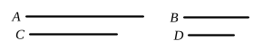
Proposition X.11
If four magnitudes be proportional, and the first be commensurable with the second, the third will also be commensurable with the fourth ; and, if the first be incommensurable with the second, the third will also be incommensurable with the fourth.
Proposition X.12
Magnitudes commensurable with the same magnitude are commensurable with one another also.
Proposition X.13
If two magnitudes be commensurable, and the one of them be incommensurable with any magnitude, the remaining one will also be incommensurable with the same.
Proposition X.14
If four straight lines be proportional, and the square on the first be greater than the square on the second by the square on a straight line commensurable with the first, the square on the third will also be greater than the square on the fourth by the square on a straight line commensurable with the third.
Proposition X.15
If two commensurable magnitudes be added together, the whole will also be commensurable with each of them; and, if the whole be commensurable with one of them, the original magnitudes will also be commensurable.
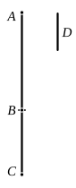
Proposition X.16
If two incommensurable magnitudes be added together, the whole will also be incommensurable with each of them; and, if the whole be incommensurable with one of them, the original magnitudes will also be incommensurable.
Proposition X.17
If there be two unequal straight lines, and to the greater there be applied a parallelogram equal to the fourth part of the square on the less and deficient by a square figure, and if it divide it into parts which are commensurable in length, then the square on the greater will be greater than the square on the less by the square on a straight line commensurable with the greater.
Proposition X.18
If there be two unequal straight lines, and to the greater there be applied a parallelogram equal to the fourth part of the square on the less and deficient by a square figure, and if it divide it into parts which are incommensurable, the square on the greater will be greater than the square on the less by the square on a straight line incommensurable with the greater.
Proposition X.19
The rectangle contained by rational straight lines commensurable in length is rational.
Proposition X.20
If a rational area be applied to a rational straight line, it produces as breadth a straight line rational and commensurable in length with the straight line to which it is applied.
Proposition X.21
The rectangle contained by rational straight lines commensurable in square only is irrational, and the side of the square equal to it is irrational. Let the latter be called medial.
Proposition X.22
The square on a medial straight line, if applied to a rational straight line, produces as breadth a straight line rational and incommensurable in length with that to which it is applied.
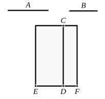
Proposition X.23
A straight line commensurable with a medial straight line is medial.
Proposition X.24
The rectangle contained by medial straight lines commensurable in length is medial.
Proposition X.25
The rectangle contained by medial straight lines commensurable in square only is either rational or medial.
Proposition X.26
A medial area does not exceed a medial area by a rational area.
Proposition X.27
To find medial straight lines commensurable in square only which contain a rational rectangle.
Proposition X.28
To find medial straight lines commensurable in square only which contain a medial rectangle.
Proposition X.29
To find two rational straight lines commensurable in square only and such that the square on the greater is greater than the square on the less by the square on a straight line commensurable in length with the greater.
Proposition X.30
To find two rational straight lines commensurable in square only and such that the square on the greater is greater than the square on the less by the square on a straight line incommensurable in length with the greater.
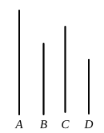
Proposition X.31
To find two medial straight lines commensurable in square only, containing a rational rectangle, and such that the square on the greater is greater than the square on the less by the square on a straight line commensurable in length with the greater.
Proposition X.32
To find two medial straight lines commensurable in square only, containing a medial rectangle, and such that the square on the greater is greater than the square on the less by the square on a straight line commensurable with the greater.
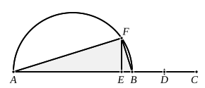
Proposition X.33
To find two straight lines incommensurable in square which make the sum of the squares on them rational but the rectangle contained by them medial.
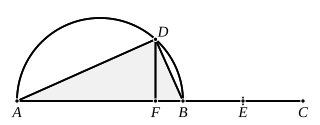
Proposition X.34
To find two straight lines incommensurable in square which make the sum of the squares on them medial but the rectangle contained by them rational.
Proposition X.35
To find two straight lines incommensurable in square which make the sum of the squares on them medial and the rectangle contained by them medial and moreover incommensurable with the sum of the squares on them.
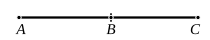
Proposition X.36
If two rational straight lines commensurable in square only be added together, the whole is irrational; and let it be called binomial.
Proposition X.37
If two medial straight lines commensurable in square only and containing a rational rectangle be added together, the whole is irrational; and let it be called a first bimedial straight line.
Proposition X.38
If two medial straight lines commensurable in square only and containing a medial rectangle be added together, the whole is irrational; and let it be called a second bimedial straight line.
Proposition X.39
If two straight lines incommensurable in square which make the sum of the squares on them rational, but the rectangle contained by them medial, be added together, the whole straight line is irrational : and let it be called major.
Proposition X.40
If two straight lines incommensurable in square which make the sum of the squares on them medial, but the rectangle contained by them rational, be added together, the whole straight line is irrational; and let it be called the side of a rational plus a medial area.
Proposition X.41
If two straight lines incommensurable in square which make the sum of the squares on them medial, and the rectangle contained by them medial and also incommensurable with the sum of the squares on them, be added together, the whole straight line is irrational; and let it be called the side of the sum of two medial areas.
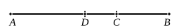
Proposition X.42
A binomial straight line is divided into its terms at one point only.
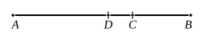
Proposition X.43
A first bimedial straight line is divided at one point only.
Proposition X.44
A second bimedial straight line is divided at one point only.
Proposition X.45
A major straight line is divided at one and the same point only.
Proposition X.46
The side of a rational plus a medial area is divided at one point only.
Proposition X.47
The side of the sum of two medial areas is divided at one point only.
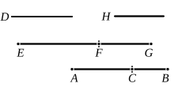
Proposition X.48
To find the first binomial straight line.
Proposition X.49
To find the second binomial straight line.
Proposition X.50
To find the third binomial straight line.
Proposition X.51
To find the fourth binomial straight line.
Proposition X.52
To find the fifth binomial straight line.
Proposition X.53
To find the sixth binomial straight line.
Proposition X.54
If an area be contained by a rational straight line and the first binomial, the “side” of the area is the irrational straight line which is called binomial.
Proposition X.55
If an area be contained by a rational straight line and the second binomial, the “side” of the area is the irrational straight line which is called a first bimedial.
Proposition X.56
If an area be contained by a rational straight line and the third binomial, the “side” of the area is the irrational straight line called a second bimedial.
Proposition X.57
If an area be contained by a rational straight line and the fourth binomial, the “side” of the area is the irrational straight line called major.
Proposition X.58
If an area be contained by a rational straight line and the fifth binomial, the “side” of the area is the irrational straight line called the side of a rational plus a medial area.
Proposition X.59
If an area be contained by a rational straight line and the sixth binomial, the “side” of the area is the irrational straight line called the side of the sum of two medial areas.
Proposition X.60
The square on the binomial straight line applied to a rational straight line produces as breadth the first binomial.
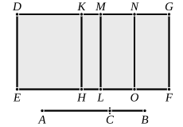
Proposition X.61
The square on the first bimedial straight line applied to a rational straight line produces as breadth the second binomial.
Proposition X.62
The square on the second bimedial straight line applied to a rational straight line produces as breadth the third binomial.
Proposition X.63
The square on the major straight line applied to a rational straight line produces as breadth the fourth binomial.
Proposition X.64
The square on the side of a rational plus a medial area applied to a rational straight line produces as breadth the fifth binomial.
Proposition X.65
The square on the side of the sum of two medial areas applied to a rational straight line produces as breadth the sixth binomial.
Proposition X.66
A straight line commensurable in length with a binomial straight line is itself also binomial and the same in order.
Proposition X.67
A straight line commensurable in length with a bimedial straight line is itself also bimedial and the same in order.
Proposition X.68
A straight line commensurable with a major straight line is itself also major.
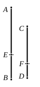
Proposition X.69
A straight line commensurable with the side of a rational plus a medial area is itself also the side of a rational plus a medial area.
Proposition X.70
A straight line commensurable with the side of the sum of two medial areas is the side of the sum of two medial areas.
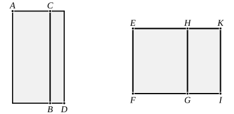
Proposition X.71
If a rational and a medial area be added together, four irrational straight lines arise, namely a binomial or a first bimedial or a major or a side of a rational plus a medial area.
Proposition X.72
If two medial areas incommensurable with one another be added together, the remaining two irrational straight lines arise, namely either a second bimedial or a side of the sum of two medial areas.
Proposition X.73
If from a rational straight line there be subtracted a rational straight line commensurable with the whole in square only, the remainder is irrational ; and let it be called an apotome.
Proposition X.74
If from a medial straight line there be subtracted a medial straight line which is commensurable with the whole in square only, and which contains with the whole a rational rectangle, the remainder is irrational. And let it be called a first apotome of a medial straight line.
Proposition X.75
If from a medial straight line there be subtracted a medial straight line which is commensurable with the whole in square only, and which contains with the whole a medial rectangle, the remainder is irrational; and let it be called a second apotome of a medial straight line.
Proposition X.76
If from a straight line there be subtracted a straight line which is incommensurable in square with the whole and which with the whole makes the squares on them added together rational, but the rectangle contained by them medial, the remainder is irrational; and let it be called minor.
Proposition X.77
If from a straight line there be subtracted a straight line which is incommensurable in square with the whole, and which with the whole makes the sum of the squares on them medial, but twice the rectangle contained by them rational, the remainder is irrational: and let it be called that which produces with a rational area a medial whole.
Proposition X.78
If from a straight line there be subtracted a straight line which is incommensurable in square with the whole and which with the whole makes the sum of the squares on them medial, twice the rectangle contained by them medial, and further the squares on them incommensurable with twice the rectangle contained by them, the remainder is irrational; and let it be called that which produces with a medial area a medial whole.
Proposition X.79
To an apotome only one rational straight line can be annexed which is commensurable with the whole in square only.
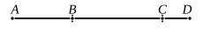
Proposition X.80
To a first apotome of a medial straight line only one medial straight line can be annexed which is commensurable with the whole in square only and which contains with the whole a rational rectangle.
Proposition X.81
To a second apotome of a medial straight line only one medial straight line can be annexed which is commensurable with the whole in square only and which contains with the whole a medial rectangle.
Proposition X.82
To a minor straight line only one straight line can be annexed which is incommensurable in square with the whole and which makes, with the whole, the sum of the squares on them rational but twice the rectangle contained by them medial.
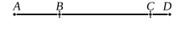
Proposition X.83
To a straight line which produces with a rational area a medial whole only one straight line can be annexed which is incommensurable in square with the whole straight line and which with the whole straight line makes the sum of the squares on them medial, but twice the rectangle contained by them rational.
Proposition X.84
To a straight line which produces with a medial area a medial whole only one straight line can be annexed which is incommensurable in square with the whole straight line and which with the whole straight line makes the sum of the squares
Proposition X.85
To find the first apotome.
Proposition X.86
To find the second apotome.
Proposition X.87
To find the third apotome.
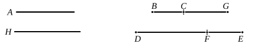
Proposition X.88
To find the fourth apotome.
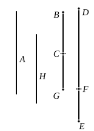
Proposition X.89
To find the fifth apotome.
Proposition X.90
To find the sixth apotome.
Proposition X.91
If an area be contained by a rational straight line and a first apotome, the “side” of the area is an apotome.
Proposition X.92
If an area be contained by a rational straight line and a second apotome, the “side” of the area is a first apotome of a medial straight line.
Proposition X.93
If an area be contained by a rational straight line and a third apotome, the “side” of the area is a second apotome of a medial straight line.
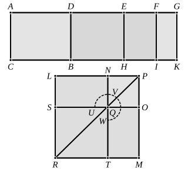
Proposition X.94
If an area be contained by a rational straight line and a fourth apotome, the “side” of the area is minor.
Proposition X.95
If an area be contained by a rational straight line and a fifth apotome, the “side” of the area is a straight line which produces with a rational area a medial whole.
Proposition X.96
If an area be contained by a rational straight line and a sixth apotome, the “side” of the area is a straight line which produces with a medial area a medial whole.
Proposition X.97
The square on an apotome applied to a rational straight line produces as breadth a first apotome.
Proposition X.98
The square on a first apotome of a medial straight line applied to a rational straight line produces as breadth a second apotome.
Proposition X.99
The square on a second apotome of a medial straight line applied to a rational straight line produces as breadth a third apotome.
Proposition X.100
The square on a minor straight line applied to a rational straight line produces as breadth a fourth apotome.
Proposition X.101
The square on the straight line which produces with a rational area a medial whole, if applied to a rational straight line, produces as breadth a fifth apotome.
Proposition X.102
The square on the straight line which produces with a medial area a medial whole, if applied to a rational straight line, produces as breadth a sixth apotome.
Proposition X.103
A straight line commensurable in length with an apotome is an apotome and the same in order.
Proposition X.104
A straight line commensurable with an apotome of a medial straight line is an apotome of a medial straight line and the same in order.
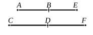
Proposition X.105
A straight line commensurable with a minor straight line is minor.
Proposition X.106
A straight line commensurable with that which produces with a rational area a medial whole is a straight line which produces with a rational area a medial whole.
Proposition X.107
A straight line commensurable with that which produces with a medial area a medial whole is itself also a straight line which produces with a medial area a medial whole.
Proposition X.108
If from a rational area a medial area be subtracted, the “side” of the remaining area becomes one of two irrational straight lines, either an apotome or a minor straight line.
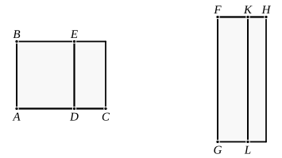
Proposition X.109
If from a medial area a rational area be subtracted, there arise two other irrational straight lines, either a first apotome of a medial straight line or a straight line which produces with a rational area a medial whole.
Proposition X.110
If from a medial area there be subtracted a medial area incommensurable with the whole, the two remaining irrational straight lines arise, either a second apotome of a medial straight line or a straight line which produces with a medial area a medial whole.
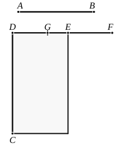
Proposition X.111
The apotome is not the same with the binomial straight line.
Proposition X.112
The square on a rational straight line applied to the binomial straight line produces as breadth an apotome the terms of which are commensurable with the terms of the binomial and moreover in the same ratio; and further the apotome so arising will have the same order as the binomial straight line.
Proposition X.113
The square on a rational straight line, if applied to an apotome, produces as breadth the binomial straight line the terms of which are commensurable with the terms of the apotome and in the same ratio; and further the binomial so arising has the same order as the apotome.
Proposition X.114
If an area be contained by an apotome and the binomial straight line the terms of which are commensurable with the terms of the apotome and in the same ratio, the “side” of the area is rational.
Proposition X.115
From a medial straight line there arise irrational straight lines infinite in number, and none of them is the same as any of the preceding.